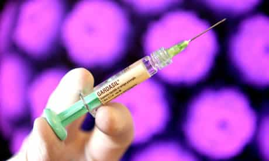
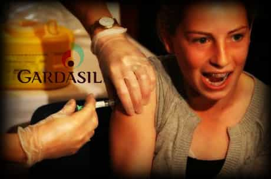
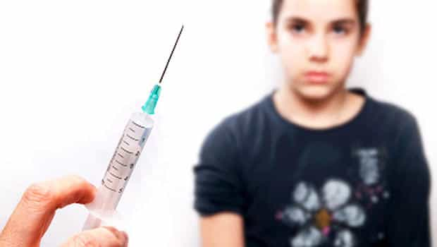
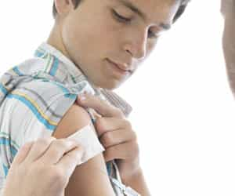

< < < Back
The HPV Vaccination Is Necessary Because Of Promiscuous Women – Return Of Kings
The Human papillomavirus (HPV) is a DNA virus from the papillomavirus family that is capable of infecting humans, and has the dubious distinction of producing the most common STD that a person could possibly be infected with, worldwide. More than 80% of American women will have contracted at least one strain of HPV by age fifty.
Most HPV infections are sub-clinical (asymptomatic), however, in some people these infections will become clinical and may cause benign papillomas (such as warts or squamous cell papilloma), or cancers of the anogenital region and oropharynx, genital warts, an increased risk of cardiovascular disease, and a unique type of oropharyngeal (throat) cancer caused by HPV 16 and 18 infections. Typically, 70% of clinical HPV infections, in young men and women, may regress to asymptomatic in one year and ninety percent in two years. However, when the sub-clinical infection persists, there is a risk of precancerous conditions which could lead to worse outcomes.
In recent times, actor Michael Douglas had a successful battle against throat cancer (later revealed to be tongue cancer), but the presence of HPV came into the public view even more than before. So did the case of Farah Fawcett. Since HPV is the most common STD infection, HPV vaccination has gradually been introduced to combat it.
The HPV vaccine prevents infection with certain strain associated with the development of cervical cancer, genital warts, and other cancers. Two HPV vaccines are currently on the market: Gardasil and Cervarix. They however, do not protect against neoplasia or cancer in individuals who are already infected with HPV.
HPV Vaccination in the modern world

Gardasil has been shown to prevent potential precursors to anal, vulvar, vaginal, and penile cancers. Though it does not treat existing infection, vaccination is still recommended for HPV positive individuals, as it may protect against one or more different strains of the disease. The HPV strains that Gardasil protects against are sexually transmitted.
Gardasil is given in three injections over six months. The second injection is two months after the first, and the third injection is six months after the first shot was administered. Gardasil is also effective in males, providing protection against genital warts, anal cancer, and some potentially precancerous lesions. Ongoing studies have demonstrated the efficacy of Gardasil in males who did not have HPV infection prior to vaccination. The vaccination is expected to protect against penile cancer and anal cancer caused by included HPV types, and research in this area is ongoing.
As of now, administration of the vaccine is approved to males between ages 9 and 26 in the US, and in the UK, licensed for males aged 9 to 15 and for females aged 9 to 26. However, there has been some debate on the push of the vaccine by the healthcare industry as well as horrific real life cases from the adverse effects of the vaccination itself.
The twisted question of HPV vaccination

The questions which come to mind are:
- Whom should get it?
- When should one get it?
- Why should one get it? (considering the risks of both not taking it, or even taking it)
- Most important of all (but rarely addressed), why did we need it? Why is HPV infection an epidemic today?
HPV vaccination is targeted more toward women to protect them from the effects of HPV, the rates of which are rising each year. Recently, the age limit for the vaccination for females was raised to 45 in certain parts of North America. The possible reasons could be that because comparatively to women, the population figures of HPV induced cancers for men is lower in number—thus making it less cost-effective for men—and also to protect late starters among females when it comes to sex. Are the population figures of HPV-induced cancers an indication that western women are more promiscuous than men today?
HPV is responsible for about 800 (about 40%) of 1,570 cases of penile cancer diagnosed annually in the United States. About half of men with penile cancer also have genital warts, which are caused by HPV. Its risk factor increases with age, and most after 50 and older. Cancer itself is a horrifying disease, but cancer of the genitalia is one of the worst nightmares a man could have, not only afflicting his life, but also his sexual worth and respect as an individual.
In today’s promiscuous times of slutty women (as women control sexual access), HPV vaccination becomes even more debatable for men—for non-promiscuous men who’d have promiscuous partners, the non-promiscuous men who intend to become promiscuous, and both the promiscuous and non-promiscuous men younger than 26 who haven’t been yet exposed to HPV.

To illustrate that point, a few excerpts from this article raise valid questions about who should get the vaccine:
“After a certain age, 26 in the United States, it is assumed most people have had enough sexual partners that they have been exposed to HPV and their bodies have produced the antibodies necessary to defeat it on their own. In the case of women who have been exposed and developed an infection, it is thought that cervical abnormalities will have been detected and dealt with. Vaccinating people after a long sexual history simply isn’t worth the cost, from a public health perspective.
“The vaccine is most useful for young people who are least likely to have been exposed. But by this measure, America is failing. Due to our long history of anti-vaccine hysteria, and some conservative politicians’ perennial efforts to politicize anything remotely related to sex, HPV vaccination rates in the United States are terribly low. Only 32 percent of girls ages 13 to 17 have received the full three-shot regimen, which is significantly less than in Canada, Great Britain, and some regions of Mexico (although much of the European Union has similarly dismal rates). Like most health issues in the United States, HPV’s worst consequences are unequally distributed, with cervical, anal, and penile cancer rates all higher among lower-income populations who tend to be poorly covered by insurance programs and have less access to health care.
For those who are under 26, getting vaccinated will likely be free. Since it is impossible to know how effective the vaccine may be in your case, it’s worth getting—it won’t hurt you or your wallet. For those over 26, vaccination can be an expensive decision, but it may well be worth it, particularly if you haven’t had many sexual partners or are expecting new ones. But to get the most bang for our public health buck, America needs to muster the political will to establish HPV vaccination programs for schoolchildren, both boys and girls. We already require vaccination of children against another sexually transmitted infection before they enter school: hepatitis B. HPV vaccination is an easy and safe way to spare kids a lot of pain and fear later in life. “
The points raised here could very well apply to men who could be entering the dating world later in their lives. A virgin in his late 20s, or a 30+ divorced man who’s coming from a marriage with one or two partners before (assuming that his wife also had a lower partner count before marriage) has a negligible exposure to HPV, so a HPV vaccination could be protect him for at least 10 years or so.
Assuming that every person has a naturally-developed resistance to HPV at 26 by taking into a hypothetical estimation of average promiscuity according to age (possibly utilizing the permissive modern social values) is itself an ambiguity, because possibly not every man could be promiscuous in his early to even late youth, due to unchained modern female hypergamy when it comes to sex partner selection.
The same could be said of a male late starter when it comes to sex, who moves abroad to have sex with women who haven’t gotten HPV vaccination. For men who’ve already been exposed to sex earlier in their lives, HPV vaccination doesn’t possibly make much sense, except possibly to protect them from new strains of infection, or if they’ve never been infected itself earlier.

It’s sad to note that speculative estimations about average partner count according to age are being used to determine the administration of a vaccine which could “potentially protect” thousands of lives. In an age where women too could indulge in criminal transmission of STDs to men even like HIV, an unsuspecting man could get a HPV infection which could damage his body later from his promiscuous partner, as most HPV infections are asymptomatic. HPV vaccination, though in its initial stages and twisted as it may seem, could be more important than actually thought to save and protect lives for the future, considering today’s promiscuous sexual mores.
A twisted “cure” for the fallout of a permissive paradigm?
The real questions remain: why did we need HPV vaccination in the first place? What propelled the need for this vaccine to be developed? Rampant (female) promiscuity, and its fallout. Women are the gatekeepers of sex.
Considering the risk factors of the vaccination itself, which could cause casualties, is it really worth it? How many more such vaccines would mankind develop in the future to combat diseases associated with the fallout of (female) promiscuity? Would this vaccine discourage promiscuity, or instead encourage it even more as a medical indulgence?
The more you look at this twisted picture, the more you realize that these are the results of what hookup cultures, promiscuity, and oversexualization have brought upon civilization. We’re just developing (or developed) more vaccines to combat the fallout on one hand, while unchaining female sluttiness and hypergamy , and over-sexualizing culture and young women through media on the other.
Female promiscuity has made us reach a stage in history where fucking itself could possibly entail a STD for a man, because one in every four western women has a HPV infection.
What options do men have in such a scenario where sex itself could possibly mean sticking your cock in a disease infested orifice, considering the epidemic proportions of HPV infection among women today? You can’t determine a HPV carrier by face alone. The problem is not the vaccine; the real problem is hypocritical societal decadence.
All modern cultures are doing is seeking to cure by putting more bandages on the illnesses of society, without addressing the real cause of such diseases. This says nothing of the innocent deaths of those lost to the side-effects of the vaccine, who unfairly paid the price as collateral damage for a vaccine developed to damage control the pathological fallout of a slutty modern social and cultural paradigm. Is there a vaccine instead against decadence?
Read More: Should Eating Pussy Be The Most Important Thing You Do In Bed?


{kind=link}
{kind=link}
{kind=link}
{kind=link}
{kind=link}
{kind=link}